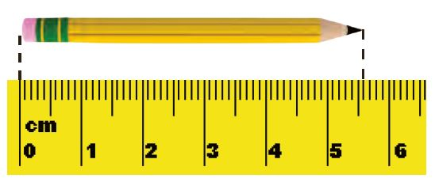

کاربرد کسر در اندازه گیری
فعالیت

1- طول این مداد را با خط کش اندازه گرفته ایم. جاهای خالی را پر کنید.
طول مداد از
سانتی متر بیشتر و از
کمتر است.
طول مداد چند میلی متر بیشتر از 5 سانتی متر است؟
یعنی چه کسری از یک سانتی متر؟
10
طول مداد
سانتی متر و
میلی متر است.
یعنی طول مداد
سانتی متر و
10
میلی متر است.